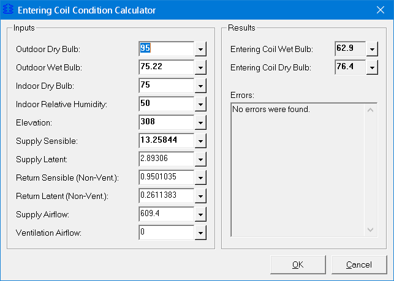

Entering Coil Condition Calculator |
  
|
Entering Coil Condition Calculator |
|
To open the Entering Coil Condition Calculator, click Calculate Entering Coil Point on the Manual S Performance Data window.

This page lets you calculate the entering coil dry bulb and wet bulb for the Manual S Performance Data window. On that window, if you have the "Allow Custom" option turned on you will need to enter your own entering coil conditions, and this window lets you calculate them by entering supply and return side loads, outdoor conditions, etc..
The values on this dialog are saved with the current system. They are saved independently from other system related values, and do not affect any other calculations.
Outdoor Dry Bulb, Outdoor Wet Bulb, etc.: Specifies the parameters used in calculating the entering coil point. Results are calculated as you type. The following inputs are optional:
Optional Inputs:
Return Sensible (Non-Vent.)
Return Latent (Non-Vent.)
Ventilation Airflow
Entering Dry Bulb and Wet Bulb: These read-only boxes show the calculated results from the values you entered above. If you make a change to any of the inputs be sure to click Calculate Results to ensure that these boxes reflect the current inputs.
Errors: Shows any errors encountered while trying to calculate the entering coil point results.
OK Button: Copies the calculated dry bulb and wet bulb entering coil conditions to the entering coil values in the Design column under Interpolation Conditions on the Manual S Performance Data window.
Cancel Button: Closes this dialog without making any changes.